SAO THỔ
"..."
Bạn có đang ở tinh cầu này?

Bên Trong Tinh Cầu Lạnh Giá Trống Rỗng
...
Mối liên hệ Vũ trụ - Tâm lý học:
Sao Thổ được biết đến với vành đai băng đá quay siết cô lập bao quanh lấy tinh cầu, ánh sáng mờ tối mỏng manh. Cảm giác trầm cảm cũng tựa như vành đai lạnh lẽo này — nó đóng băng mọi cảm xúc vui buồn, vây hãm sinh lực bạn trong một hố sâu trống rỗng cô lập. Những lúc cạn kiệt năng lượng, đừng cố ép mình phải vui vẻ hay làm việc, hãy dịu dàng với bản thân và thắp sáng từng tinh tú siêu nhỏ để sưởi ấm tâm hồn.
Những số liệu về sự trống rỗng tinh thần

Mất sinh lực và sự đóng băng
Dòng suy nghĩ lơ lửng
@phi_hanh_gia_012
"Tôi cảm thấy trống rỗng hoàn toàn, không có buồn, không có vui, giống như một khoảng chân không."
@phi_hanh_gia_404
"Việc bước ra khỏi giường và đi đánh răng sáng nay đối với tôi như một thử thách khổng lồ."
@phi_hanh_gia_702
"Mọi sở thích trước đây đều trở nên vô nghĩa, tôi chỉ muốn nằm yên lặng trong bóng tối."

Nguồn gốc sự đóng băng cảm xúc
Ảnh hưởng âm thầm của sự trì trệ kéo dài

Nuôi dưỡng mầm sống bằng sự bao dung dịu dàng

Vành đai đá băng tinh xảo Sao Thổ

Kích hoạt cảm xúc qua hành động vi mô
Thắp Sáng Ngôi Sao Hy Vọng
Nhấp chọn kết nối các ngôi sao nhỏ cô đơn trên bầu trời Sao Thổ để thắp lên chòm sao hy vọng:
Chạm thắp sáng 5 tinh tú cô đơn.
